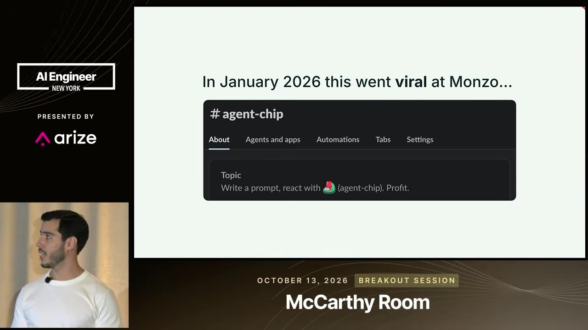
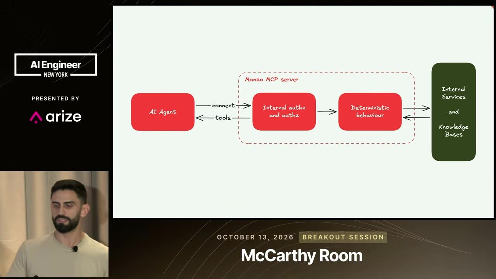
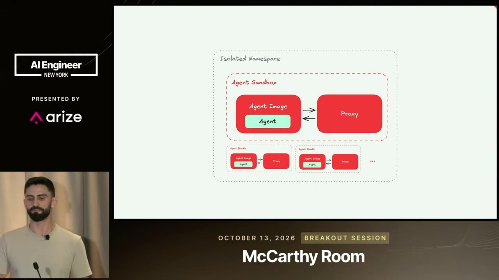
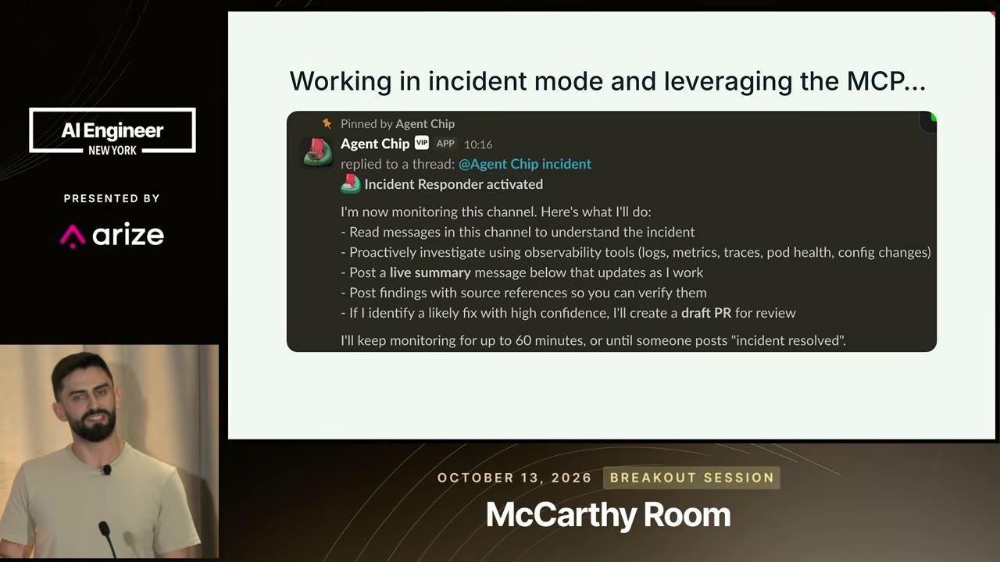

essencial do dia: O Monzo mostra quais peças da plataforma interna fizeram um agente de código chegar a mais de 10% dos PRs.
Como o Monzo construiu seu agente de código
A Bank Built Its Own Coding Agent. It Took Off
O agente do Monzo decolou porque a plataforma interna já tinha muitas peças prontas. O modelo de IA sozinho teria rendido pouco.
Depois deste talk você consegue listar as peças de plataforma que ajudam um agente de código a decolar, como gateway MCP, sandbox isolado e integrações prontas
Em 3 frases
O Monzo, um banco digital, criou o Agent Chip, um agente de código que começou como um emoji no Slack e hoje escreve mais de 10% dos pull requests integrados nas equipes de tecnologia.
Os palestrantes atribuem o sucesso a vários multiplicadores que já existiam: alertas, ambiente de staging, filas, deploy simples, um gateway MCP para ferramentas internas e um sandbox isolado para rodar o agente.
Como o agente virou uma peça reutilizável, ele passou a atuar em incidentes, na triagem de alertas de qualidade de dados e em pedidos de pessoas que não são engenheiras, sempre com revisão humana antes do deploy.
Antes de ler
- Agente de código autônomo IA que recebe uma tarefa e abre o PR sozinha
- Pull request pedido de integração de código analogia no glossário
- MCP gateway porta única que liga o agente às ferramentas analogia no glossário
- Sandbox ambiente isolado para rodar o código analogia no glossário
- Network egress tráfego de saída da rede analogia no glossário
- Human in the loop humano no circuito de validação analogia no glossário
Mais 1 termo
Um emoji no Slack virou o ponto de entrada
O Agent Chip ficou viral dentro do Monzo porque qualquer pessoa pode reagir a uma mensagem com um emoji e transformá-la em prompt. Depois ele virou um colega sempre disponível no Slack. Responde dúvidas de arquitetura, revisa código e recebe tarefas do Linear. A barreira de entrada baixa explica boa parte da adoção.


(ampliar imagem)Lots of little multipliers: a plataforma vem antes do agente
Os palestrantes dizem que LLMs, neste caso, significa lots of little multipliers (muitos pequenos multiplicadores). O agente aproveitou capacidades que o banco já tinha: alertas, monitoramento, integrações com terceiros, staging, filas, deploy fácil e abstrações de banco de dados. Sem essa base, reagir com um emoji não geraria resultado útil.
04:15 O ganho vem das peças de plataforma que o banco já tinha.
Gateway MCP como porta controlada para o contexto
O Monzo colocou serviços internos e fontes de conhecimento atrás de um servidor MCP próprio. Ele decide de forma determinística o que os agentes podem ver e cuida de autenticação e autorização. A ideia começou com agentes de código locais e serve depois ao agente remoto. Mais contexto, dado com segurança, melhora o resultado.


(ampliar imagem)Mais 2 ideias deste talk
Sandbox isolado para conter o não determinismo
Por ser banco regulado, o Monzo roda os agentes em pods dentro de um namespace isolado. A imagem do agente define as ferramentas, e um proxy libera só a saída de rede escolhida. O não determinismo fica na caixa mais interna, onde o agente pode agir à vontade, separada da infraestrutura de produção.


(ampliar imagem)O agente como peça de construção: incidentes e não engenheiros
Com o agente reutilizável, o banco criou outros usos. Em incidentes, o Agent Chip entra no canal e investiga logs, traces e código, mantendo sinal alto. Ele também faz triagem de alertas de qualidade de dados e rascunha respostas entre squads. Pessoas de fora de engenharia pedem mudanças, recebem um rascunho testado em staging e só então chamam um engenheiro para revisar.


(ampliar imagem)O talk mostra um caso interno e não traz avaliação independente. Os números de adoção (10% dos PRs, 1.800 tarefas por dia) aparecem sem comparação com um período anterior, sem taxa de aceitação, sem custo e sem dado de qualidade ou retrabalho. Não se sabe se esses PRs são pequenos ou se exigem muita correção na revisão. A conclusão de que a plataforma foi o motivo do sucesso é plausível, mas não foi testada. O argumento de manter o agente em casa soa como justificativa de uma decisão já tomada. Os benefícios em incidentes e para não engenheiros vêm só de exemplos, sem métricas.
Teste você mesmo
Responda de cabeça antes de abrir. Lembrar com esforço é o que fixa.
- lembrar Por que, segundo os palestrantes, o Agent Chip decolou no Monzo?
Ver resposta
A plataforma interna já tinha muitas peças prontas, como alertas, monitoramento, integrações, staging, filas e deploy fácil. Eles chamam isso de lots of little multipliers. O modelo sozinho teria rendido pouco.
- aplicar Que partes da sua infraestrutura um agente poderia usar hoje e como você daria acesso seguro?
Ver resposta
Liste alertas, staging, filas e deploy que sua equipe já tem. Centralize o acesso a sistemas internos em um gateway com autenticação e autorização por agente e rode o agente em ambiente isolado.
- criticar Que dados faltam para concluir que a plataforma explica o sucesso do agente?
Ver resposta
Os números (10% dos PRs, 1.800 tarefas por dia) vêm sem comparação anterior, taxa de aceitação, custo ou retrabalho. A ligação com a plataforma é plausível, mas não foi testada, e os ganhos em incidentes vêm só de exemplos.
Desenhar o acesso controlado de um agente
Você precisa de: Claude Code e um projeto seu com alguma API, pasta de docs ou base de dados
- Liste três fontes de dados do seu projeto que um agente poderia consultar.
- Escreva para cada fonte o que o agente pode ler e o que não pode.
- Crie um servidor MCP simples que exponha só uma dessas fontes, em modo leitura.
- Peça ao agente para responder uma pergunta usando apenas esse servidor.
Deu certo se: O agente responde usando só o servidor e não alcança as fontes que você não liberou.
O que fazer com isso
- Liste as capacidades que sua equipe já tem (alertas, staging, filas, deploy) e verifique se um agente consegue usá-las antes de comprar ou construir algo novo.
- Se for expor sistemas internos a agentes, centralize o acesso em um gateway com autenticação e autorização por agente, em vez de dar credenciais diretas.
- Rode agentes em ambiente isolado e libere só a saída de rede necessária, mantendo revisão humana antes de qualquer deploy.
- Ofereça um ponto de entrada simples, como um comando ou emoji no chat da equipe, e meça quantas tarefas e PRs integrados vêm dele.
Conversa com outros talks
- Código de agentes contra código humano em PRs · 27 set · em comum: Agente de código autônomo, Pull request, Sandbox
- Como delegar trabalho a agentes e manter o humano no risco · 12 out · em comum: Human in the loop, Sandbox, Triage
- Rodar agentes de código em sandbox de microVM · 2 out · em comum: Network egress, Sandbox